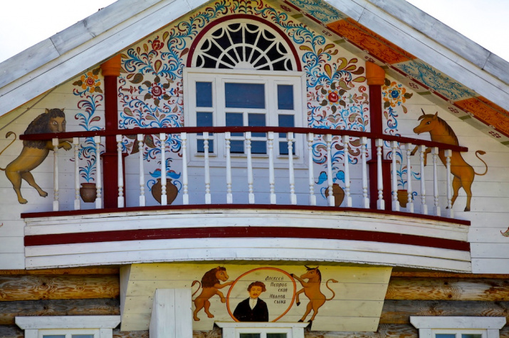
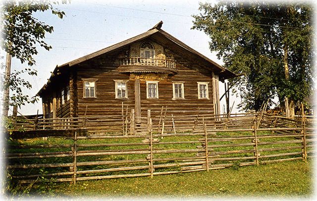
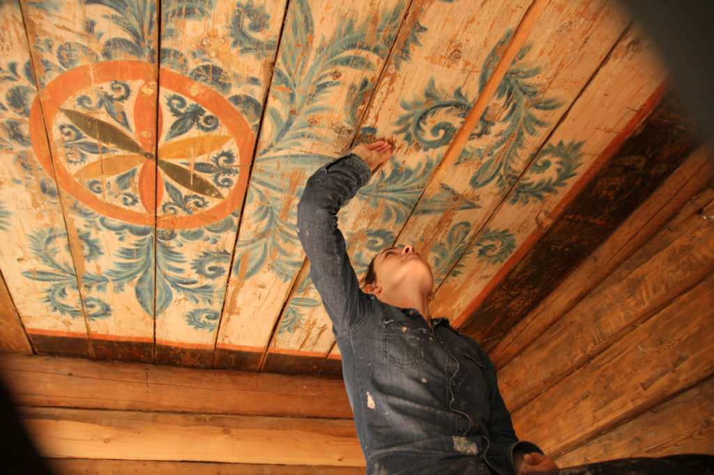
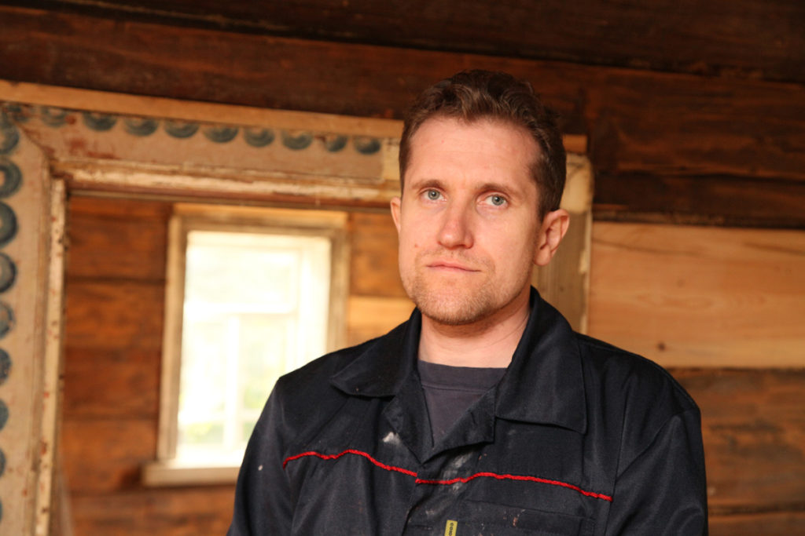
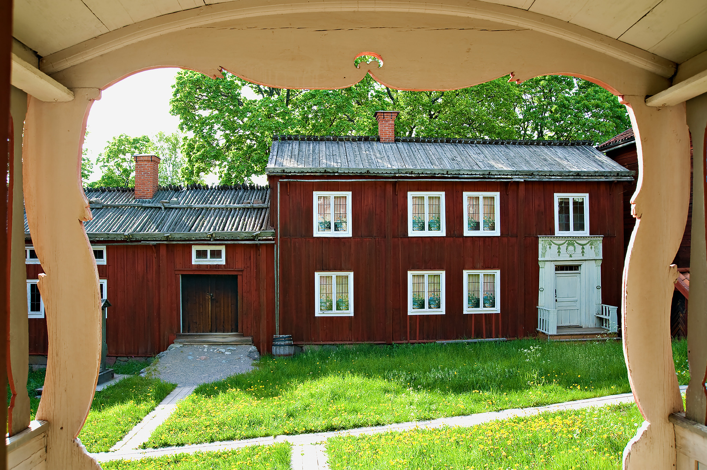

Деталь
Цветок, «морозный» завиток, лев или единорог.

Алёшкин дом · Поважье
В Алёшкином доме лев, единорог и портреты хозяев были частью одной расписной среды. Где здесь кончается картина и начинается сам дом — и чему можно доверять, если изба утрачена?
Документальный пролог · 16 секунд
Четыре кадра ведут от подлинного дома к современному музейному воссозданию. Их нельзя выдавать за один исторический объект.
Архивные фотографии и кадры воссоздания. Без нейросетевой дорисовки утраченного дома.
Аудиопрогулка · 1 минута 25 секунд
Один кадр фиксирует подлинный дом, второй возвращает его масштаб в современном музее. Голос помогает увидеть архитектурную вертикаль и не спутать свидетельства.
Читает синтезированный голос Дмитрий. Аудио не запускается автоматически.
Остановись перед двумя фотографиями Алёшкиного дома. Слева — подлинный дом в деревне Чурковской. Справа — современное музейное воссоздание в Переславле. Сначала найди треугольник фронтона. Роспись не висит на нём как отдельная картина: она следует за скатами кровли и обрамляет окно. Теперь опусти взгляд к балкону. Лев и единорог стоят по сторонам архитектурного проёма и делают фасад похожим на лицо. Ещё ниже появляется портрет. Человеческая фигура входит в тот же порядок, что растения и звери. Так изображение соединяет кровлю, окно, балкон и вход в одну вертикаль. Но помни о границе свидетельств. Архивный кадр показывает подлинный дом. Новая постройка возвращает масштаб и положение росписи, но не становится памятником девятнадцатого века. После аудиогида сравни пять свидетельств и сам реши, что сообщает каждое из них.
Главный маршрут · 5 свидетельств
Пройди от архивной фотографии к современному воссозданию. На каждом шаге смотри на метку: подлинный дом, проектный документ или музейное воссоздание.

Четыре масштаба
Цветок, «морозный» завиток, лев или единорог.
Стена, печь, мебель и потолок связаны одним ритмом.
Фасад заранее сообщает о цветном мире внутри.
Связанные дома Ваги образуют традицию, но не универсальный «северный узор».
Что заметить
Смотри не только на рисунок. Заметь, расположен ли он над дверью, на опечке, на шкафу или под потолком. Именно место превращает красивый фрагмент в часть архитектуры.
Трудно поверить
Когда изба исчезает, остаются обмеры, фотографии и снятые фрагменты. Они не возвращают подлинник, но позволяют проверить, где находилась роспись и какую часть пространства она собирала.
Человеческая история
Алёшкин дом был родовым домом Петровских. В работах, которые исследователи связывают с этими мастерами, встречаются цветочные композиции, синие волнообразные побеги, лев и единорог. Но самое неожиданное свидетельство — портретная живопись на опечке: хозяева вошли в расписную среду рядом с привычными образами.
Дом в Чурковской утрачен. Сохранившиеся фотографии, обмеры и снятые фрагменты теперь нельзя выдавать за одно и то же: фотография фиксирует состояние, фрагмент хранит подлинную краску, а современное воссоздание возвращает масштаб и маршрут человека.
Имена изображённых на портретах требуют точной музейной атрибуции. Страница не придумывает их ради красивой семейной легенды.

Второй маршрут · Переславль-Залесский
В 2014 году в музейном комплексе «Русский парк» появился Алёшкин дом, созданный по обмерам и документам. Это современное музейное воссоздание: оно даёт войти в объём и увидеть роспись на архитектурных местах, но не заменяет утраченный памятник.
Историческая фотография фиксирует дом до утраты. Источник: проектировщик воссоздания «Русский дом».
Современный фронтон по документам и обмерам. Фото опубликовано Русским географическим обществом.
Можно заново пережить масштаб фасада, положение росписи и связь изображения с балконом и кровлей. Нельзя считать новую древесину, краску и каждую восстановленную деталь подлинной частью дома XIX века. Для проверки их сопоставляют с обмерами, архивными снимками и музейными фрагментами.
Открытое расследование
Архивный снимок показывает состояние в конкретный момент. Музейный фрагмент сохраняет подлинную краску, но уже отделён от комнаты. Воссоздание возвращает пространственный опыт, однако остаётся современной работой по документам.
Предложить документ или фотографию →Документ, фрагмент, воссоздание
Эти кадры не смешиваются в одну придуманную избу. Каждый отвечает только за то, что действительно зафиксировал.



Россия и мир

Фасад, дверь, печь, встроенная мебель и потолок соединяются одним почерком. Дом работает как цельная цветная среда.

В богатых крестьянских усадьбах особенно украшали парадные помещения. Сходство не доказывает заимствование: сравнение показывает разные роли расписного интерьера.
Не каталог узоров, а судьбы домов
Чурковская. Архивные фотографии и документы относятся к подлинному дому; музейное воссоздание в Переславле показывает объём заново и подписано отдельно.
Заручей, 1884. Дом перевезли в Вельск; после реставрации он открыт как Музей домовых росписей Поважья. Подлинную краску нельзя смешивать с восстановленными участками.
Пакшеньга, 1886. Портреты хозяев, лев, единорог и петух сохранились отдельно от дома — их архитектурный адрес восстанавливается по документации.
Игра о сохранении
Дом разбирают для переноса. Отметь сведения, без которых роспись потеряет биографию.
Собери три доказательства.
Проверка взгляда
Выбери один ответ. Ошибка тоже откроет подсказку.
Календарь музея архитектуры
Готовые выпуски отмечены золотом. Пустой день честно означает, что материал ещё не опубликован.
Куда дальше
Найди мотив, затем покажи его точный адрес: фронтон, дверь, печь, мебель или потолок. После этого спроси, перед тобой подлинник, архивный кадр или воссоздание.